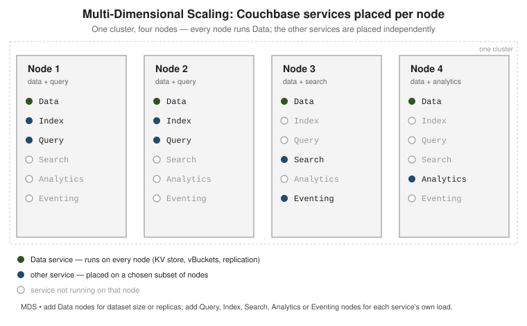

What Couchbase Server is & how to run it
|
This section documents the current Couchbase Server 7.6.x line as published at the Couchbase Server documentation, which is the reference these pages are written and verified against. No specific patch version is pinned. Some capabilities (Enterprise-Edition-only Analytics, auditing, encryption at rest, the Backup service and rack-zone awareness, and Capella-only App Services and Columnar) are linked, not documented in depth. This content was generated with the assistance of AI and should be verified against the official documentation before being relied on in production, as Couchbase iterates quickly. Couchbase Essentials (John Zablocki, Packt, 2015), Pro Couchbase Development (Deepak Vohra, Apress, 2015) and Pro Couchbase Server, 2nd ed. (David Ostrovsky, Mohammed Haji, Yaniv Rodenski, Apress, 2015) are listed in this section’s bibliography and were consulted while preparing these pages. None of them is the primary or main reference for the section, and all three predate the current server line — they target roughly Couchbase Server 3.x / 4.0, before scopes & collections, the SQL++ rename, the Query/Index/Search/Analytics/Eventing service split, GSI-over-Views, distributed ACID transactions, RBAC, synchronous-replication durability, the sub-document API, and Capella — so on any discrepancy the official documentation at docs.couchbase.com wins, and the difference is noted. |
Couchbase Server is a distributed database that keeps its working set in memory and stores each record as a JSON document addressed by a key. It is a document database and a key-value store at the same time: the same record can be fetched by key in microseconds or matched by a SQL-like query language (SQL++). This page explains the model and its trade-offs, the services that make up a node, and how to start one.
A distributed, memory-first document database
A Couchbase cluster is a set of identical nodes that share one configuration. Data lives in buckets, each partitioned into 1024 vBuckets spread evenly across the Data-service nodes, with a configurable number of replicas. Every document belongs to a collection inside a scope inside a bucket; Buckets, scopes & collections covers that hierarchy.
The tiers map onto the relational vocabulary, with one difference: a collection does not impose a single
column list on the documents it holds. A route document embeds its schedule as an array instead of
splitting it into a child table:
{
"type": "route",
"airline": "AA",
"sourceairport": "SFO",
"destinationairport": "JFK",
"stops": 0,
"schedule": [
{ "day": 1, "flight": "AA332", "utc": "14:41:00" },
{ "day": 2, "flight": "AA834", "utc": "09:05:00" }
]
}
Because a document carries its own structure, the same record can be read two ways:
# Key-value: fetch one document by its key, no query planning involved. cbc get route_10209 -U couchbase://localhost/travel-sample # SQL++: match many documents by their content. SELECT a.name, a.callsign FROM `travel-sample`.inventory.airline a WHERE a.country = "United States" LIMIT 5;
The trade-offs that follow from this model:
-
Flexible schema. Two documents in one collection may carry different fields. Structure is real — it lives in the application, in indexes, and optionally in query predicates — but the database does not require you to declare it up front or migrate every record when it changes.
-
Horizontal scale. Add nodes and rebalance; vBuckets and their replicas redistribute automatically, so both dataset size and throughput scale out across commodity machines.
-
Memory-first latency. The Data service holds a working set in RAM and persists to disk asynchronously, so reads and writes that hit memory return in well under a millisecond, without a separate cache tier in front of the database.
For the relational baseline these points contrast with, see SQL Reference; for another document database’s take on the same ideas, see MongoDB Reference. For a narrative overview, read Introduction to Couchbase and Architecture Overview.
The services model and Multi-Dimensional Scaling
A Couchbase node runs one or more services, and each service can be placed on a different subset of nodes:
| Service | Responsibility |
|---|---|
Data |
The key-value store: vBuckets, replication, expiry, the sub-document API |
Query |
Executes SQL++ statements, using the Index and Data services |
Index |
Global secondary indexes (GSI) that the Query service reads |
Search |
Full-text search indexes and queries |
Analytics |
Ad-hoc analytical (columnar) queries over a shadow copy of the data (Enterprise Edition) |
Eventing |
Server-side functions triggered by data changes (Enterprise Edition) |
Backup |
Scheduled, incremental cluster backups (Enterprise Edition) |

Because the services are independent, you scale each one for its own bottleneck — add Data nodes for dataset size or replica count, add Query and Index nodes for query throughput, isolate Analytics so a heavy report cannot slow operational traffic. Couchbase calls this Multi-Dimensional Scaling (MDS).
# Add a node and give it only the Query and Index services. couchbase-cli server-add -c localhost:8091 -u Administrator -p password \ --server-add 10.0.0.5:8091 \ --server-add-username Administrator --server-add-password password \ --services query,index # Rebalance so the cluster starts placing indexes and routing queries to it. couchbase-cli rebalance -c localhost:8091 -u Administrator -p password
See Services and Indexes for what each service does and how to co-locate or separate them.
Editions and how you run it
Enterprise, Community, and Capella
-
Enterprise Edition (EE) — free for development and testing, paid subscription for production. All seven services, plus rack-zone awareness, encryption at rest, X.509 authentication, and the Backup service.
-
Community Edition (CE) — a free, Apache-2.0-licensed build that trails EE by a release or two. Data, Query, Index and Search only; no Analytics, Eventing or Backup service, and fewer security options.
-
Capella — Couchbase’s fully managed database-as-a-service. It runs the same server on a cloud provider of your choice and adds provisioning, autoscaling, backups and monitoring, plus Capella-only App Services (Mobile sync) and Columnar. Capella-only capabilities are linked from these pages, not documented in depth.
Start a node
# Enterprise Edition, single node, via Docker. docker run -d --name db -p 8091-8096:8091-8096 -p 11210:11210 \ couchbase:enterprise # Open http://localhost:8091 and run "Setup New Cluster" in the Web Console, # or initialise the same cluster from the command line: couchbase-cli cluster-init -c localhost:8091 \ --cluster-username Administrator --cluster-password password \ --services data,query,index,fts \ --cluster-ramsize 1024 --cluster-index-ramsize 512
Native packages for Linux, macOS and Windows, and the Docker walk-through, are listed under
Install Couchbase Server. The
browser-based Web Console on port 8091 is the primary admin UI; the first-run walk-through is
Start Here.
Query shells
# cbq -- the SQL++ command-line shell that ships with the server. cbq -e couchbase://localhost -u Administrator -p password cbq> SELECT "hello" AS greeting; # cbsh -- Couchbase Shell, a separate cross-platform shell with a # pipeline/scripting language layered over the same cluster. cbsh --connstr couchbase://localhost -u Administrator -p password > doc get route_10209 --bucket travel-sample
cbq is documented at the cbq-shell
reference; the standalone Couchbase Shell (cbsh) has its own documentation at
couchbase.sh.
Sample buckets
# Load the sample data sets used throughout these pages # (also offered as checkboxes in the Web Console setup wizard). curl -u Administrator:password -X POST \ http://localhost:8091/sampleBuckets/install \ -d '["travel-sample","beer-sample"]'
travel-sample holds airlines, airports, routes, hotels and landmarks (plus scopes for agency bookings);
beer-sample holds breweries and beers. See
Sample
Buckets.
What Couchbase is not
# "Not just a cache": a write can be required to reach a majority of
# replicas, and disk, before it is acknowledged.
cbc create order:99 -V '{"total": 42}' \
--durability persist_to_majority \
-U couchbase://localhost/travel-sample
# https://docs.couchbase.com/server/current/learn/data/durability.html
-
Not only a cache. The Memcached bucket type and the memory-first design invite the comparison, but Couchbase and Ephemeral buckets replicate, and Couchbase buckets persist to disk and support synchronous-replication durability. It is a system of record, not a volatile layer in front of one.
-
Not "schemaless" in the anything-goes sense. Every document is JSON within the 20 MiB value limit, a key is unique within its collection, and index and query semantics still assume shapes your application controls. What is flexible is that the schema is not declared centrally, not that anything goes.
-
Not a drop-in SQL RDBMS. SQL++ is SQL-like but runs over nested, heterogeneous JSON. There are no cross-document foreign keys, joins are not the default access path, and multi-document transactions are a deliberate choice rather than the norm. Porting a normalized relational schema unchanged usually works against the model.
Continue with Buckets, scopes & collections.